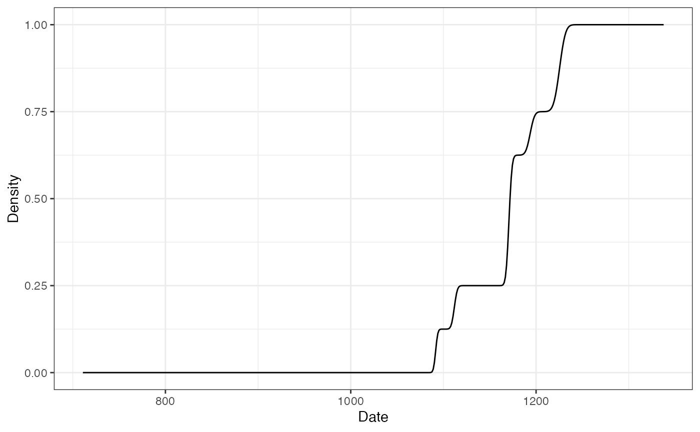
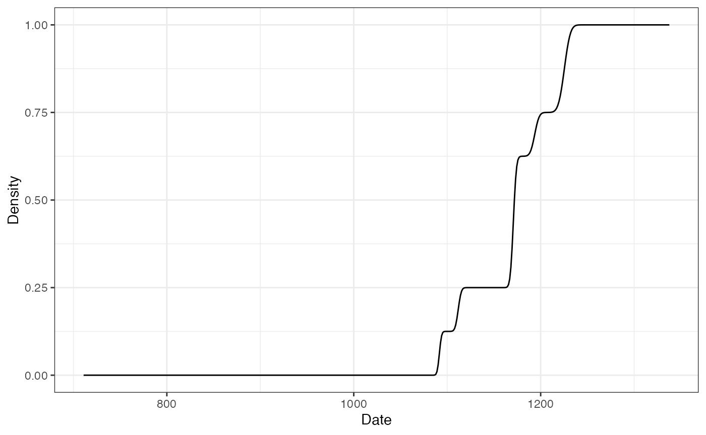

Not All Dates Are Created Equal
This vignette presents different methods for dating archaeological assemblages using artifact count data. Here, dating refers to “the placement in time of events relative to one another or to any established scale of temporal measurement” (Dean 1978). This involves distinguishing between relative (that provide only a chronological sequence of events) and absolute dating methods (that yield a calendric indication and may provide the duration of an event) (O’Brien and Lyman 2002). Strictly speaking, there is no absolute dating given how dates are produced and given that any date refers to a scale. The distinction between absolute and relative time can be rephrased more clearly as quantifiable vs. non-quantifiable (O’Brien and Lyman 2002): absolute dates “are expressed as points on standard scales of time measurement” (Dean 1978).
We will keep here the distinction between a date an age as formulated by Colman, Pierce, and Birkeland (1987): “a date is a specific point in time, whereas an age is an interval of time measured back from the present.” Dealing with dates in archaeology can be tricky if one does not take into account the sources of the chronological information. In most cases, a date represents a terminus for a given archaeological assemblage. That is, a date before (terminus ante-quem) or after (terminus post-quem) which the formation process of the assemblage took place. This in mind, one obvious question that should underlie any investigation is what does the date represent?
First, let’s be more formal:
- An archaeological event is determined by its unknown calendar date \(\theta\).
- \(\theta\) can be addressed by one or more of calendar dates \(t\) with associated error \(\delta t\).
- \(t \pm \delta t\) can be provided by different means and is assumed to be related to the event.
This implies that:
- There are no error-free dates in archaeology (although uncertainties cannot always be quantified).
- Errors are assumed here to be symmetrical. This is true for most physical dating methods, but may be false after some data processing (e. g. 14C calibration).
For a set of \(m\) assemblages in which \(p\) different types of artifact were recorded, let \(X = \left[ x_{ij} \right] ~\forall i \in \left[ 1,m \right], j \in \left[ 1,p \right]\) be the \(m \times p\) count matrix with row and column sums:
\[ \begin{align} x_{i \cdot} = \sum_{j = 1}^{p} x_{ij} && x_{\cdot j} = \sum_{i = 1}^{m} x_{ij} && x_{\cdot \cdot} = \sum_{i = 1}^{m} x_{i \cdot} = \sum_{j = 1}^{p} x_{\cdot j} && \forall x_{ij} \in \mathbb{N} \end{align} \]
Note that all \(x_{ij}\) are assumed to be error-free.
Mean Ceramic Date
Definition
The Mean Ceramic Date (MCD) is a point estimate of the occupation of an archaeological site (South 1977). The MCD is estimated as the weighted mean of the date midpoints of the ceramic types \(t_j\) (based on absolute dates or the known production interval) found in a given assemblage. The weights are the conditional frequencies of the respective types in the assemblage.
The MCD is defined as: \[ t^{MCD}_i = \sum_{j = 1}^{p} t_j \times \frac{x_{ij}}{x_{i \cdot}} \]
The MCD error is defined as: \[ \delta t^{MCD}_i = \sqrt{ \sum_{j = 1}^{p} \left( \delta t_j \times \frac{x_{ij}}{x_{i \cdot}} \right)^2 } \]
Limitation
The MCD is a point estimate: knowing the mid-date of an assemblage and not knowing the time span of accumulation might be short sighted. MCD offers a rough indication of the chronological position of an assemblage, but does not tell if an assemblage represents ten or 100 years.
Usage
## Coerce the zuni dataset to an abundance (count) matrix zuni_counts <- as_count(zuni) ## Set the start and end dates for each ceramic type zuni_dates <- list( LINO = c(600, 875), KIAT = c(850, 950), RED = c(900, 1050), GALL = c(1025, 1125), ESC = c(1050, 1150), PUBW = c(1050, 1150), RES = c(1000, 1200), TULA = c(1175, 1300), PINE = c(1275, 1350), PUBR = c(1000, 1200), WING = c(1100, 1200), WIPO = c(1125, 1225), SJ = c(1200, 1300), LSJ = c(1250, 1300), SPR = c(1250, 1300), PINER = c(1275, 1325), HESH = c(1275, 1450), KWAK = c(1275, 1450) ) ## Calculate date midpoint zuni_mid <- vapply(X = zuni_dates, FUN = mean, FUN.VALUE = numeric(1)) ## Calculate MCD ## (we use a bootstrapping procedure to estimate the confidence interval) zuni_mcd <- date_mcd(zuni_counts, dates = zuni_mid) head(zuni_mcd) #> date lower upper #> LZ1105 1162.5000 1162.1643 1164.2420 #> LZ1103 1137.8378 1136.8800 1140.0653 #> LZ1100 1154.4643 1152.5376 1156.0857 #> LZ1099 1090.6250 1090.5726 1091.1086 #> LZ1097 1092.1875 1086.1146 1092.4916 #> LZ1096 841.0714 842.2773 850.1191
Event & Accumulation Date
Definition
Event and accumulation dates are density estimates of the occupation and duration of an archaeological site (Bellanger, Husi, and Tomassone 2006; Bellanger, Tomassone, and Husi 2008; Bellanger and Husi 2012).
The event date is an estimation of the terminus post-quem of an archaeological assemblage. The accumulation date represents the “chronological profile” of the assemblage. According to Bellanger and Husi (2012), accumulation date can be interpreted “at best […] as a formation process reflecting the duration or succession of events on the scale of archaeological time, and at worst, as imprecise dating due to contamination of the context by residual or intrusive material.” In other words, accumulation dates estimate occurrence of archaeological events and rhythms of the long term.
Event Date
Event dates are estimated by fitting a Gaussian multiple linear regression model on the factors resulting from a correspondence analysis - somewhat similar to the idea introduced by Poblome and Groenen (2003). This model results from the known dates of a selection of reliable contexts and allows to predict the event dates of the remaining assemblages.
First, a correspondence analysis (CA) is carried out to summarize the information in the count matrix \(X\). The correspondence analysis of \(X\) provides the coordinates of the \(m\) rows along the \(q\) factorial components, denoted \(f_{ik} ~\forall i \in \left[ 1,m \right], k \in \left[ 1,q \right]\).
Then, assuming that \(n\) assemblages are reliably dated by another source, a Gaussian multiple linear regression model is fitted on the factorial components for the \(n\) dated assemblages:
\[ t^E_i = \beta_{0} + \sum_{k = 1}^{q} \beta_{k} f_{ik} + \epsilon_i ~\forall i \in [1,n] \] where \(t^E_i\) is the known date point estimate of the \(i\)th assemblage, \(\beta_k\) are the regression coefficients and \(\epsilon_i\) are normally, identically and independently distributed random variables, \(\epsilon_i \sim \mathcal{N}(0,\sigma^2)\).
These \(n\) equations are stacked together and written in matrix notation as
\[ t^E = F \beta + \epsilon \]
where \(\epsilon \sim \mathcal{N}_{n}(0,\sigma^2 I_{n})\), \(\beta = \left[ \beta_0 \cdots \beta_q \right]' \in \mathbb{R}^{q+1}\) and
\[ F = \begin{bmatrix} 1 & f_{11} & \cdots & f_{1q} \\ 1 & f_{21} & \cdots & f_{2q} \\ \vdots & \vdots & \ddots & \vdots \\ 1 & f_{n1} & \cdots & f_{nq} \end{bmatrix} \]
Assuming that \(F'F\) is nonsingular, the ordinary least squares estimator of the unknown parameter vector \(\beta\) is:
\[ \widehat{\beta} = \left( F'F \right)^{-1} F' t^E \]
Finally, for a given vector of CA coordinates \(f_i\), the predicted event date of an assemblage \(t^E_i\) is:
\[ \widehat{t^E_i} = f_i \hat{\beta} \]
The endpoints of the \(100(1 − \alpha)\)% associated prediction confidence interval are given as:
\[ \widehat{t^E_i} \pm t_{\alpha/2,n-q-1} \sqrt{\widehat{V}} \]
where \(\widehat{V_i}\) is an estimator of the variance of the prediction error: \[ \widehat{V_i} = \widehat{\sigma}^2 \left( f_i^T \left( F'F \right)^{-1} f_i + 1 \right) \]
were \(\widehat{\sigma} = \frac{\sum_{i=1}^{n} \left( t_i - \widehat{t^E_i} \right)^2}{n - q - 1}\).
The probability density of an event date \(t^E_i\) can be described as a normal distribution:
\[ t^E_i \sim \mathcal{N}(\widehat{t^E_i},\widehat{V_i}) \]
Accumulation Date
As row (assemblages) and columns (types) CA coordinates are linked together through the so-called transition formulae, event dates for each type \(t^E_j\) can be predicted following the same procedure as above.
Then, the accumulation date \(t^A_i\) is defined as the weighted mean of the event date of the ceramic types found in a given assemblage. The weights are the conditional frequencies of the respective types in the assemblage (akin to the MCD).
The accumulation date is estimated as: \[ \widehat{t^A_i} = \sum_{j = 1}^{p} \widehat{t^E_j} \times \frac{x_{ij}}{x_{i \cdot}} \]
The probability density of an accumulation date \(t^A_i\) can be described as a Gaussian mixture:
\[ t^A_i \sim \frac{x_{ij}}{x_{i \cdot}} \mathcal{N}(\widehat{t^E_j},\widehat{V_j}^2) \]
Interestingly, the integral of the accumulation date offers an estimates of the cumulative occurrence of archaeological events, which is close enough to the definition of the tempo plot introduced by Dye (2016).
Limitation
Event and accumulation dates estimation relies on the same conditions and assumptions as the matrix seriation problem. Dunnell (1970) summarizes these conditions and assumptions as follows.
The homogeneity conditions state that all the groups included in a seriation must:
- Be of comparable duration.
- Belong to the same cultural tradition.
- Come from the same local area.
The mathematical assumptions state that the distribution of any historical or temporal class:
- Is continuous through time.
- Exhibits the form of a unimodal curve.
Theses assumptions create a distributional model and ordering is accomplished by arranging the matrix so that the class distributions approximate the required pattern. The resulting order is inferred to be chronological.
Predicted dates have to be interpreted with care: these dates are highly dependent on the range of the known dates and the fit of the regression.
Usage
## Bellanger et al. did not publish the data supporting their demonstration: ## no replication of their results is possible. ## Here is a pseudo-replication using the zuni dataset and results of the ## previous example. ## Randomly picks 100 assemblages and assume that they are reliably dated ## (this is NOT a real example) set.seed(12345) dates <- zuni_mcd$date dates[sample(1:420, 320, FALSE)] <- NA ## Model the event and accumulation date for each assemblage model <- date_event(zuni_counts, dates = dates, cutoff = 90) summary(model[["model"]]) #> #> Call: #> stats::lm(formula = date ~ ., data = contexts) #> #> Residuals: #> Min 1Q Median 3Q Max #> -5.2087 -1.5065 -0.2089 1.0650 9.1631 #> #> Coefficients: #> Estimate Std. Error t value Pr(>|t|) #> (Intercept) 1164.9603 0.3153 3694.357 < 2e-16 *** #> CA1 -155.9303 0.2922 -533.602 < 2e-16 *** #> CA2 -21.0837 0.2754 -76.561 < 2e-16 *** #> CA3 -0.3062 0.2990 -1.024 0.30849 #> CA4 -10.8489 0.5257 -20.636 < 2e-16 *** #> CA5 1.4325 0.4514 3.173 0.00206 ** #> CA6 -5.0523 0.3734 -13.531 < 2e-16 *** #> CA7 -6.2901 0.5105 -12.323 < 2e-16 *** #> CA8 -10.2887 0.5214 -19.733 < 2e-16 *** #> CA9 4.3033 0.5038 8.541 3.09e-13 *** #> --- #> Signif. codes: 0 '***' 0.001 '**' 0.01 '*' 0.05 '.' 0.1 ' ' 1 #> #> Residual standard error: 2.553 on 90 degrees of freedom #> Multiple R-squared: 0.9997, Adjusted R-squared: 0.9997 #> F-statistic: 3.411e+04 on 9 and 90 DF, p-value: < 2.2e-16 ## Estimate event and accumulation dates event <- predict_event(model, zuni_counts, level = 0.95) head(event[["row_events"]]) #> date lower upper error #> LZ1105 1163.8996 1162.1479 1165.6512 0.8816960 #> LZ1103 1139.0535 1138.2156 1139.8914 0.4217688 #> LZ1100 1155.5852 1154.6134 1156.5570 0.4891426 #> LZ1099 1090.7211 1088.8860 1092.5562 0.9236978 #> LZ1097 1091.2531 1089.5720 1092.9343 0.8462204 #> LZ1096 841.6346 840.1886 843.0805 0.7278297 head(event[["accumulation"]]) #> date error #> LZ1105 1166.678 0 #> LZ1103 1137.932 0 #> LZ1100 1157.092 0 #> LZ1099 1081.647 0 #> LZ1097 1092.986 0 #> LZ1096 879.002 0
## Activity plot plot_date(event, type = "activity", event = TRUE, select = "LZ1105") + ggplot2::theme_bw() ## Tempo plot plot_date(event, type = "tempo", select = "LZ1105") + ggplot2::theme_bw()
 

Resampling methods can be used to check the stability of the resulting model. If jackknife is TRUE, one type/fabric is removed at a time and all statistics are recalculated. In this way, one can assess whether certain type/fabric has a substantial influence on the date estimate. If bootstrap is TRUE, a large number of new bootstrap assemblages is created, with the same sample size, by resampling the original assemblage with replacement. Then, examination of the bootstrap statistics makes it possible to pinpoint assemblages that require further investigation.
## Check model variability ## Warning: this may take a few seconds ## Jackknife fabrics refined_jack <- refine_event(model, method = "jackknife") #> | | | 0% | |==== | 6% | |======== | 11% | |============ | 17% | |================ | 22% | |=================== | 28% | |======================= | 33% | |=========================== | 39% | |=============================== | 44% | |=================================== | 50% | |======================================= | 56% | |=========================================== | 61% | |=============================================== | 67% | |=================================================== | 72% | |====================================================== | 78% | |========================================================== | 83% | |============================================================== | 89% | |================================================================== | 94% | |======================================================================| 100% head(refined_jack) #> date lower upper error bias #> LZ1105 1166.728 1164.976 1168.4794 0.8816960 48.079309 #> LZ1103 1136.124 1135.286 1136.9623 0.4217688 -49.795060 #> LZ1100 1158.759 1157.787 1159.7307 0.4891426 53.953930 #> LZ1099 1082.365 1080.530 1084.2003 0.9236978 -142.050439 #> LZ1097 1090.301 1088.620 1091.9820 0.8462204 -16.188246 #> LZ1096 841.988 840.542 843.4339 0.7278297 6.007909 ## Bootstrap of assemblages refined_boot <- refine_event(model, method = "bootstrap", n = 1000) #> | | | 0% | | | 1% | |= | 1% | |= | 2% | |== | 2% | |== | 3% | |== | 4% | |=== | 4% | |=== | 5% | |==== | 5% | |==== | 6% | |===== | 7% | |===== | 8% | |====== | 8% | |====== | 9% | |======= | 10% | |======== | 11% | |======== | 12% | |========= | 12% | |========= | 13% | |========== | 14% | |========== | 15% | |=========== | 15% | |=========== | 16% | |============ | 16% | |============ | 17% | |============ | 18% | |============= | 18% | |============= | 19% | |============== | 19% | |============== | 20% | |============== | 21% | |=============== | 21% | |=============== | 22% | |================ | 22% | |================ | 23% | |================ | 24% | |================= | 24% | |================= | 25% | |================== | 25% | |================== | 26% | |=================== | 27% | |=================== | 28% | |==================== | 28% | |==================== | 29% | |===================== | 30% | |====================== | 31% | |====================== | 32% | |======================= | 32% | |======================= | 33% | |======================== | 34% | |======================== | 35% | |========================= | 35% | |========================= | 36% | |========================== | 36% | |========================== | 37% | |========================== | 38% | |=========================== | 38% | |=========================== | 39% | |============================ | 39% | |============================ | 40% | |============================ | 41% | |============================= | 41% | |============================= | 42% | |============================== | 42% | |============================== | 43% | |============================== | 44% | |=============================== | 44% | |=============================== | 45% | |================================ | 45% | |================================ | 46% | |================================= | 47% | |================================= | 48% | |================================== | 48% | |================================== | 49% | |=================================== | 50% | |==================================== | 51% | |==================================== | 52% | |===================================== | 52% | |===================================== | 53% | |====================================== | 54% | |====================================== | 55% | |======================================= | 55% | |======================================= | 56% | |======================================== | 56% | |======================================== | 57% | |======================================== | 58% | |========================================= | 58% | |========================================= | 59% | |========================================== | 59% | |========================================== | 60% | |========================================== | 61% | |=========================================== | 61% | |=========================================== | 62% | |============================================ | 62% | |============================================ | 63% | |============================================ | 64% | |============================================= | 64% | |============================================= | 65% | |============================================== | 65% | |============================================== | 66% | |=============================================== | 67% | |=============================================== | 68% | |================================================ | 68% | |================================================ | 69% | |================================================= | 70% | |================================================== | 71% | |================================================== | 72% | |=================================================== | 72% | |=================================================== | 73% | |==================================================== | 74% | |==================================================== | 75% | |===================================================== | 75% | |===================================================== | 76% | |====================================================== | 76% | |====================================================== | 77% | |====================================================== | 78% | |======================================================= | 78% | |======================================================= | 79% | |======================================================== | 79% | |======================================================== | 80% | |======================================================== | 81% | |========================================================= | 81% | |========================================================= | 82% | |========================================================== | 82% | |========================================================== | 83% | |========================================================== | 84% | |=========================================================== | 84% | |=========================================================== | 85% | |============================================================ | 85% | |============================================================ | 86% | |============================================================= | 87% | |============================================================= | 88% | |============================================================== | 88% | |============================================================== | 89% | |=============================================================== | 90% | |================================================================ | 91% | |================================================================ | 92% | |================================================================= | 92% | |================================================================= | 93% | |================================================================== | 94% | |================================================================== | 95% | |=================================================================== | 95% | |=================================================================== | 96% | |==================================================================== | 96% | |==================================================================== | 97% | |==================================================================== | 98% | |===================================================================== | 98% | |===================================================================== | 99% | |======================================================================| 99% | |======================================================================| 100% head(refined_boot) #> min mean max Q5 Q95 #> LZ1105 1109.0431 1163.976 1217.131 1134.991 1192.0801 #> LZ1103 1061.3537 1139.720 1214.415 1095.151 1182.2620 #> LZ1100 1046.3230 1156.304 1231.029 1105.464 1201.6241 #> LZ1099 1079.3681 1090.763 1102.971 1085.178 1096.6791 #> LZ1097 913.2488 1091.202 1234.394 1001.135 1171.9589 #> LZ1096 737.8050 841.998 1049.294 737.805 945.4642
References
Bellanger, L., Ph. Husi, and R. Tomassone. 2006. “Statistical Aspects of Pottery Quantification for the Dating of Some Archaeological Contexts.” Archaeometry 48 (1): 169–83. https://doi.org/10.1111/j.1475-4754.2006.00249.x.
Bellanger, Lise, and Philippe Husi. 2012. “Statistical Tool for Dating and Interpreting Archaeological Contexts Using Pottery.” Journal of Archaeological Science 39 (4): 777–90. https://doi.org/10.1016/j.jas.2011.06.031.
Bellanger, L., R. Tomassone, and P. Husi. 2008. “A Statistical Approach for Dating Archaeological Contexts.” Journal of Data Science 6: 135–54.
Colman, Steven M., Kenneth L. Pierce, and Peter W. Birkeland. 1987. “Suggested Terminology for Quaternary Dating Methods.” Quaternary Research 28 (2): 314–19. https://doi.org/10.1016/0033-5894(87)90070-6.
Dean, Jeffrey S. 1978. “Independent Dating in Archaeological Analysis.” In Advances in Archaeological Method and Theory, 223–55. Elsevier. https://doi.org/10.1016/B978-0-12-003101-6.50013-5.
Dunnell, Robert C. 1970. “Seriation Method and Its Evaluation.” American Antiquity 35 (3): 305–19. https://doi.org/10.2307/278341.
Dye, Thomas S. 2016. “Long-Term Rhythms in the Development of Hawaiian Social Stratification.” Journal of Archaeological Science 71 (July): 1–9. https://doi.org/10.1016/j.jas.2016.05.006.
O’Brien, Michael J, and R. Lee Lyman. 2002. Seriation, Stratigraphy, and Index Fossils: The Backbone of Archaeological Dating. Dordrecht: Springer.
Poblome, J., and P. J. F. Groenen. 2003. “Constrained Correspondence Analysis for Seriation of Sagalassos Tablewares.” In The Digital Heritage of Archaeology, edited by M. Doerr and A. Sarris. Hellenic Ministry of Culture.
South, S. A. 1977. Method and Theory in Historical Archaeology. Studies in Archeology. New York: Academic Press.